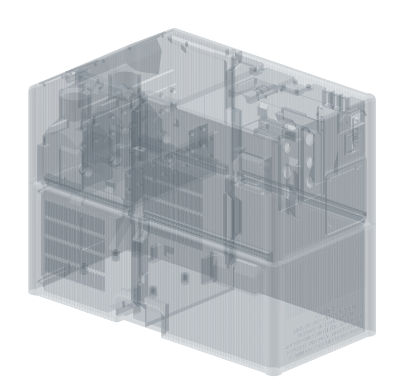
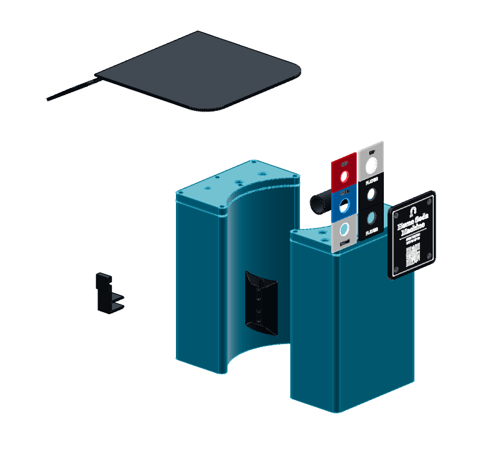

PETG · the plastic
Plain PETG holds the flavoring.
The enclosure is stiffened with glass fibre. The two reservoirs are not. They and their lids are plain clear PETG, laid a little fat so that every road is pressed into its neighbours.
Seen in Bambu PETG Translucent Clear · Mark 1 · glued Engineering Plate · left 0.8 mmNot tried in: Mark2


Reservoirs and their lids
CLEAR
Printed, and holding water. They hold the flavoring, and the level shows through the wall. The glass-filled PET-GF stays in the shells around them.
Funnel cover
BASIC, BLACK
Sliced, never sent. A solid plate that closes the fill funnel between fills.
Chips and nameplate
BASIC, FOUR COLOURS
Printed 8 November 2026. Black, white, blue and red through 0.2 mm nozzles. The status plate on the front shared their bed, with a clear window for its light.
Small parts inside
BASIC, BLACK
No print on record. The relief-valve shroud, the reed bridge and the fuse clamp.
Which PETG, which print
SunTop clear, an off-brand spool: the first two reservoirs, 22 and 25 May 2026. The first leaked. Not used since. Bambu PETG Translucent Clear: every reservoir and lid from 30 May 2026, both halves of the funnel mold, and the status light’s window. Bambu PETG Basic: the chips, the nameplate and the status plate.
One family, two recipes, and neither is PET-GF’s.
| Clear PETG · reservoir body | Clear PETG · mold half | PET-GF · enclosure | |
|---|---|---|---|
| Nozzle | Mark 1, left {{petg_res:/nozzle_diameter/0}} mm | Mark 1, {{petg_mold:/0.4/side}} {{petg_mold:/0.4/nozzle_mm}} mm | left {{petg_gf:/nozzle_diameter/0}} mm |
| Plate | {{petg_res:/curr_bed_type}}, glued, {{petg_res:/eng_plate_temp/0}} °C | Textured PEI | {{petg_gf:/curr_bed_type}}, {{petg_gf:/textured_plate_temp/0}} °C |
| Lift added to the first layer | none: {{petg_slice:/plates/0/z_trim_commands/1}} | {{petg_mold:/0.4/z_trim/default_mm}} mm | its own for each printer and plate |
| Brim | {{petg_res:/brim_width}} mm | {{petg_mold:/0.4/process_settings/brim_width/value}} mm | {{petg_gf:/brim_type}} |
| Layers, first / rest | {{petg_res:/initial_layer_print_height}} / {{petg_res:/layer_height}} mm | the preset’s | {{petg_gf:/initial_layer_print_height}} / {{petg_gf:/layer_height}} mm |
| Nozzle heat, first / rest | {{petg_res:/nozzle_temperature_initial_layer/0}} / {{petg_res:/nozzle_temperature/0}} °C | the preset’s | {{petg_gf:/nozzle_temperature_initial_layer/0}} / {{petg_gf:/nozzle_temperature/0}} °C |
| Flow | {{petg_res:/filament_flow_ratio/0}} | {{petg_mold:/0.4/filament_settings/filament_flow_ratio/value/0}} | {{petg_gf:/filament_flow_ratio/0}} |
| Wall loops | {{petg_res:/wall_loops}}, {{petg_res:/wall_generator}}, {{petg_res:/line_width}} mm each | {{petg_mold:/0.4/process_settings/wall_loops/value}} | {{petg_gf:/wall_loops}}, {{petg_gf:/wall_generator}} |
| Inside the loops | {{petg_res:/sparse_infill_density}} {{petg_res:/sparse_infill_pattern}} | {{petg_mold:/0.4/process_settings/sparse_infill_density/value}} {{petg_mold:/0.4/process_settings/sparse_infill_pattern/value}} | {{petg_gf:/sparse_infill_density}} {{petg_gf:/sparse_infill_pattern}} |
| Fill pushed into the loops | {{petg_plan:/plates/0/infill_wall_overlap}} left body · {{petg_plan:/plates/1/infill_wall_overlap}} right body | the preset’s | {{petg_gf:/infill_wall_overlap}} |
| Part fan on plain walls | {{petg_res:/fan_min_speed/0}} to {{petg_res:/fan_max_speed/0}}%, off for {{petg_res:/close_fan_the_first_x_layers/0}} layers | the preset’s | {{petg_gf:/fan_max_speed/0}}% |
“I have found in other testing that over extrusion (flow ratio) helps with air tightness / water tightness.”
Still openThe project file holds the reservoir column. Two notes beside it still describe the file as it stood during October’s trials: 30% and 265/270 °C through the right nozzle. The right body is still bound to 30%, the last value with a water test written against that side, though its 50% print finished on 26 October 2026 and Derek’s word of 12 November covers it. No printed PETG surface has been through the food-contact screen the project wrote for it.